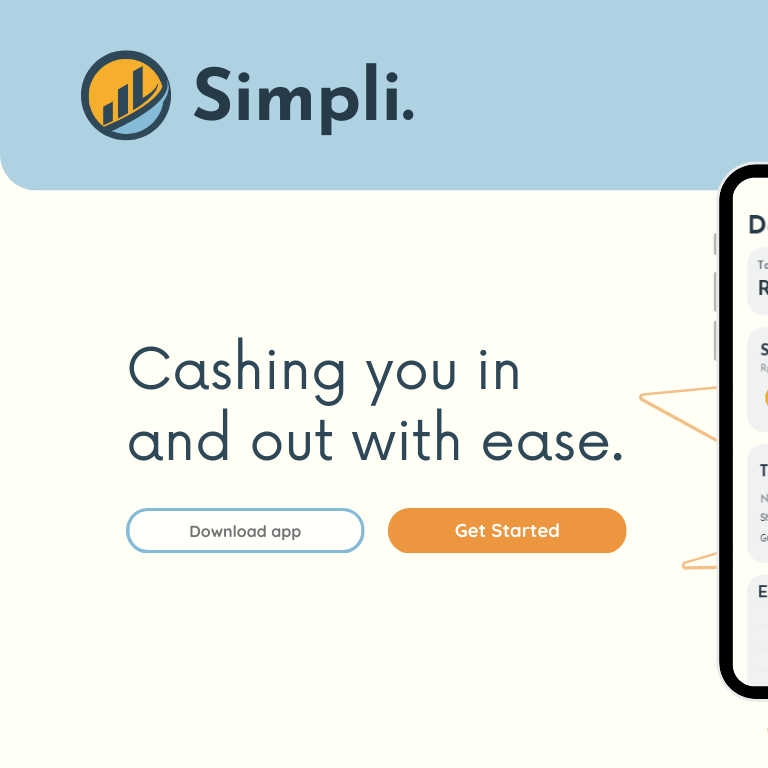
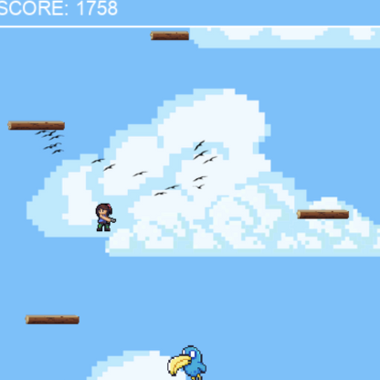
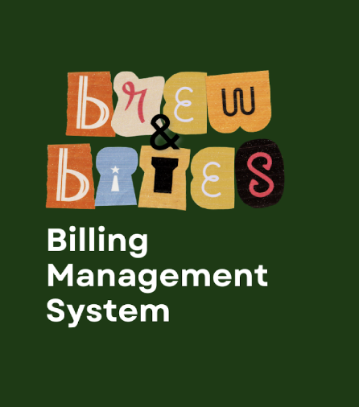

Simpli.
‘Simpli.’ is a website that centres itself in finances and how our users can conveniently manage them. Derived from the word ‘simple,’ we strive to provide our users with a very user-friendly and easy access experience when it comes to managing and tracking their funds through our website.

1 Hop 2 Hop Game
1 Hop 2 Hop is an endless platform game that is heavily inspired by the classic arcade game ‘Frogger,’ also mixed with the games I used to play on my iPod when I was younger. In order to play the game, the user controls the avatar using the A and D keys to move left and right. To avoid falling, which eventually will close your score and end the current game, the user should try to land on the wood planks. When the user reaches a minimum score of 1500 points, new obstacles are generated and the player should try to avoid it.

Brew & Bites Billing System
'Brew & Bites Billing System' is a billing management system that runs on Java. It has built in OOP properties as well as data structures. This application allows the administrator to add, update, remove buyers and products as well as manage the billing process. The management system provides features like placing products in stock, updating their details, and calculating the total for buyers.